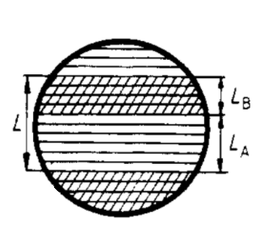
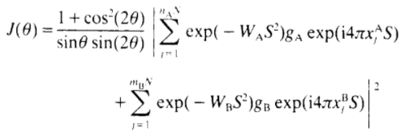

Rys. Schemat budowy sztucznej supersieci metalicznej AMS.
Do obliczania intensywności wiązki ugiętej wykorzystywany jest wzór Schulera:

Aplikacja umożliwia 2 sposoby wykonywania obliczeń - podstawowy i zaawansowany.
W trybie podstawowym użytkownik może dostosować tylko najważniejsze parametry obliczeń, takie jak pierwiastki chemiczne,
z których złożona jest analizowana supersieć, ilość przestrzeni krystalograficznych składających się na poszczególne warstwy
(nA i mB), ilość ich powtórzeń (N) oraz zakres kąta dyfrakcji 2θ.
W trybie zaawansowanym użytkownik może dodatkowo zdecydować, czy chce skorzystać z dostępnych w bazie pierwiastków,
czy wpisać wartości dhkl ręcznie, określić wartości współczynników Debye'a-Wallera (WA i WB),
określić wartości funkcji rozpraszania (gA i gB), zdefiniować długość fali promieniowania rentgenowskiego
(λ) oraz sprecyzować procentowy przedział błędu obliczeń. Dla obu trybów dostępna jest możliwość dopasowania skali uzyskanych
natężeń do własnych potrzeb.
Dodatkową funkcją aplikacji jest wykonywanie operacji odwracania macierzy, zrealizowane w ramach osobnej części pracy magisterskiej.